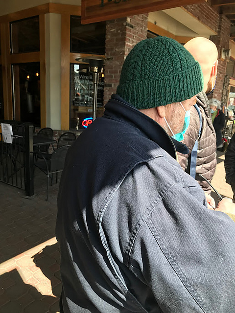

Scout’s Knitting Projects
Home
Blog
Scout’s Knits
Categories
cables
hats
sweaters

The Cable Seed Hat
hats
cables
Cables and seed and ribbing, oh my!
Scout Leonard
Aug 31, 2022
The Kingston Sweater
sweaters
The best sweater for the best mom!🫶
Scout Leonard
Aug 31, 2022
Tiny Stripes Hat
hats
cables
Tiny = Cute, and that’s facts.
Scout Leonard
Aug 31, 2022
No matching items